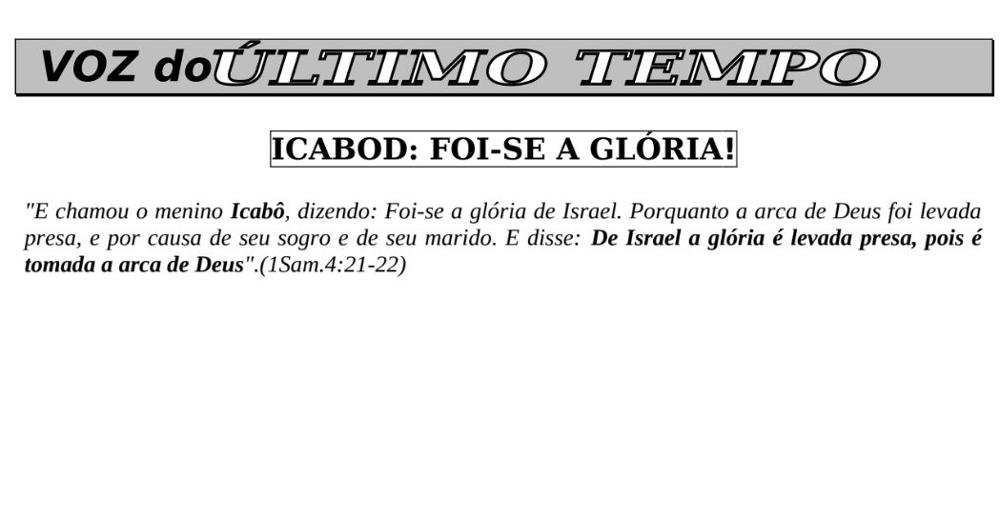
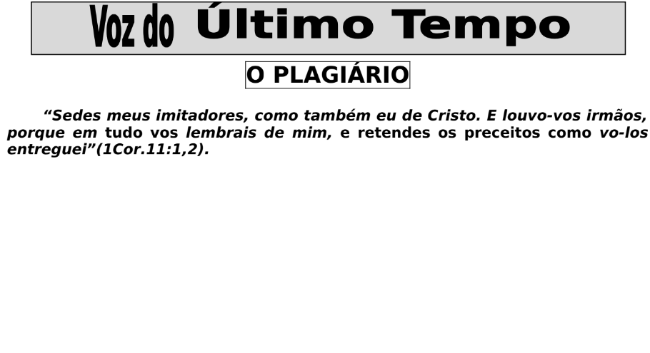

“Examinais as Escrituras, porque vós cuidais ter nelas a vida eterna, e são elas que de mim testificam.
E não quereis vir a mim para terdes vida.” - João 5:39-40

A Doutrina do Cristo
Teologia ou Revelação?

A Fé na Promessa do Dia
João 5: 35-38

A Má influência dos Povos Misturados
Números 11: 4-6

A Salvação que Deus Preparou para Todos os Povos
Lucas 2 :25-32

Entre a Pressão do Poder Secular e o Ódio dos Líderes Religiosos Tradicionalistas e formalistas
Salmos 2:1-4, 10-12

ICABOD: Foi Se a Glória
"...E disse: De Israel a glória é levada presa, pois é
tomada a arca de Deus".(1Sam.4:21-22)

JESUS: Sinal de Contradição entre os povos
Lucas 2: 34

José de Arimatéia: A Salvação é Individual
Lucas 23: 50-53 & Atos 10: 34-35

Na Era da Restauração...
“És-tu Aqule que Havia de Vir Ou Esperamos Outro?

O Esposo e o Amigo do Esposo
João 3: 27-31

O Discípulo do Cristo e o Cristão
Act.11: 26 « e em Antioquia os discípulos pela primeira
vez foram chamados cristãos. »

O Perigo que Representa os Pregadores e as "Igrejas Virtuais" das Redes Sociais
Tiago 3: 1

O Plagiário
1º Coríntios 11: 1-2

O Testemunho Antigo
1º João 1: 1-3

O Testemunho da "Pedra" que Emanou do Rio Jordão
Na Antiga e Nova Aliança - Josué 4: 4-7

Quando Deus decide fechar todas as Igrejas e Deixar Apenas uma Aberta...
Jeremias 5: 30-31

Quando Deus decide lançar a Vergonha sobre os Falsos Profetas
Miquéias 3: 5-8

Simão de Cirene
Quando a Curiosidade Conduz a Jesus e a Salvação... Como por Acaso!

Todos os Profetas Anunciaram esta Hora!
Atos 3: 19-20